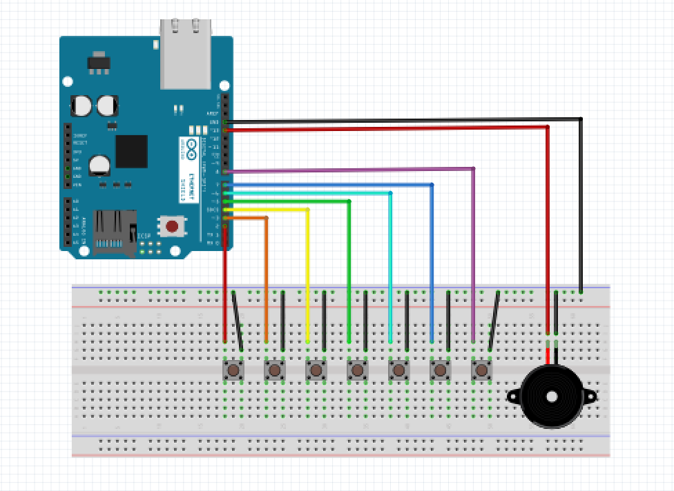
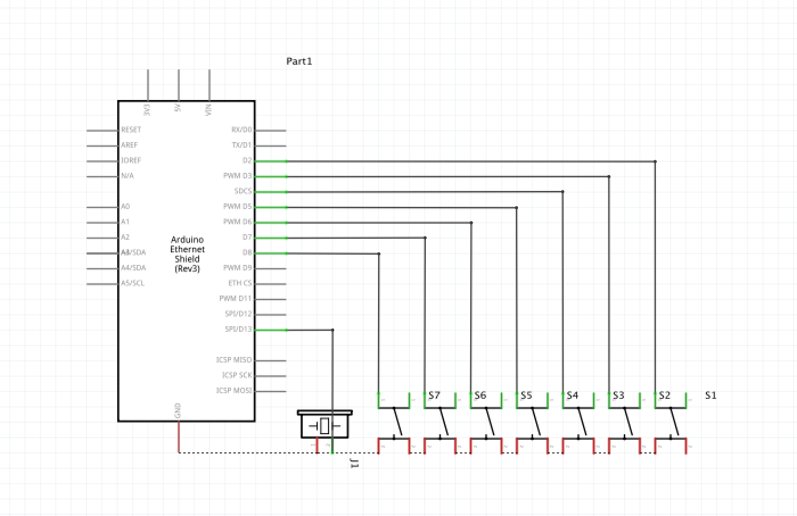
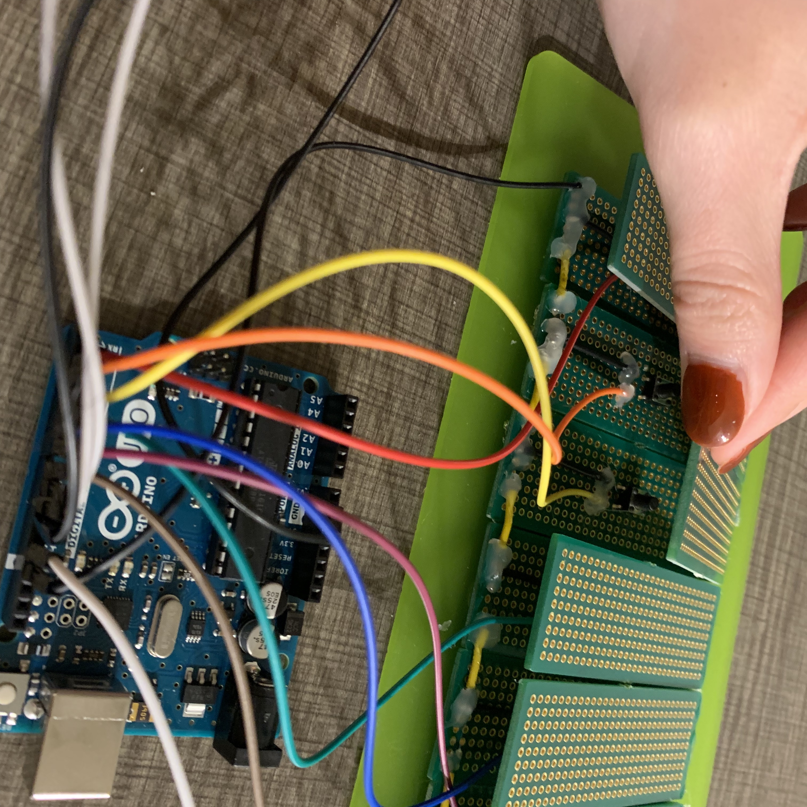
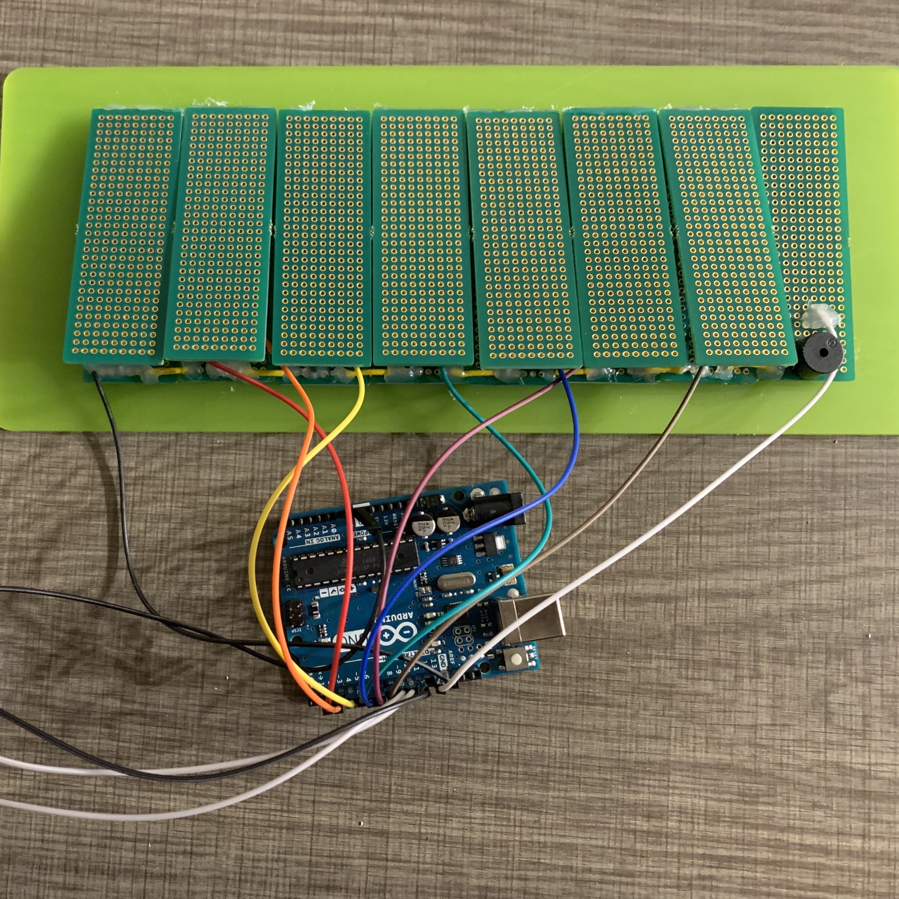

To build the circuit, I used:
Arduino UNO
Push Buttons x 8
A Buzzer
Several Jumper Wires
Breadboard or PCB boards(soldered together)
In order to make a keyboard, I soldered each push button to a PCB board and use
hook-up wires to connect them together. These materials are what I used to build
the final prototype.
Optional:
Solder(for soldering)
Soldering Iron(for soldering)
Hook-up Wires(for soldering)
Glue Gun(to glue the PCB boards together and secure the circuit)
Acrylic Plexiglass Sheet(for laser cutting)

 
The video above shows a demonstration of the final prototype.
Hope you enjoyed this project!